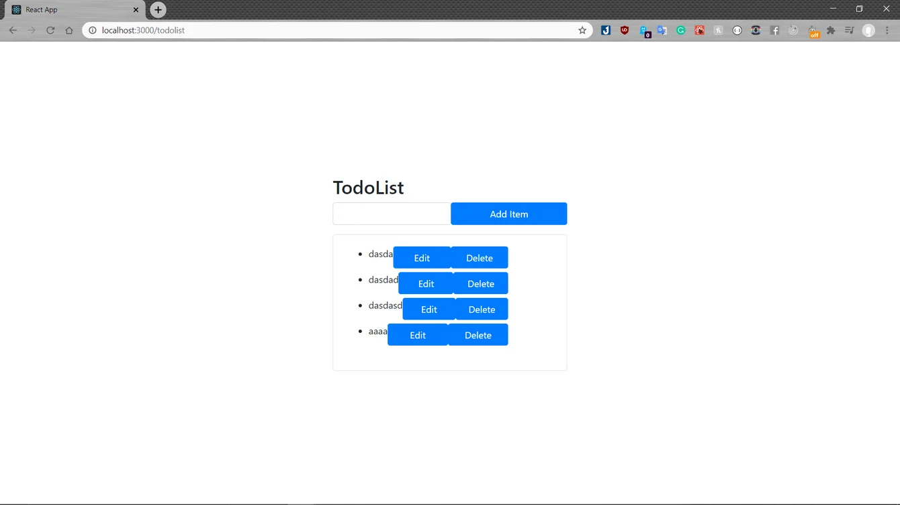

Welcome to my next blog !! Everyone must know about Todo App right? Here in this blog, I will show you how to create a Todo with Firebase Firestore and Reactjs and use Firebase Hosting to deploy it.
1. Why do we use Firebase?
Firebase is a extremely powerful platform that helps you perform realtime updates to database, along with many other cool features. It also acts as a database and storage for you to handle. The set up is really easy.
2. Setting up Firebase in Reactjs
2.1 Create a Project on Firebase
If you dont have an account, register one on firebase (you can use your Google account).
Once you have an account, go to Console and add a new project like the figure below.
We dont need Google Analytics so remember to turn that off -> Choose Web Application when asked adding Firebase to your app.
Here we get to the add Firebase SDK step. We need to set up this value in our project so remember to save it.
Finish the set up, and now go to Cloud Firestore tab and create a new database. Here, your set up on the Firebase Console should be completed
2.2 Set up Firebase and Firestore in React App
Create a simple Reactjs App by running the following code
npx create-react-app my-app
cd my-app
npm start
Install firebase dependencies
npm i firebase
After deleting all the unnecessary rendered files, we should have a simple React app set up. Now in the /src folder, create a service folder and inside it create a firebase.js file. This will be the file that contains all of our Firebase SDK set up that we just save
Inside the this firebase.js folder, we will set the variables up like this
import firebase from "firebase/app";
import "firebase/auth";
import "firebase/firestore";
const app = firebase.initializeApp({
apiKey: process.env.REACT_APP_FIREBASE_API_KEY,
authDomain: process.env.REACT_APP_AUTH_DOMAIN,
databaseURL: process.env.REACT_APP_DATABASE_URL,
projectId: process.env.REACT_APP_PROJECT_ID,
storageBucket: process.env.REACT_APP_STORAGE_BUCKET,
messagingSenderId: process.env.REACT_APP_MESSAGING_SENDER_ID,
appId: process.env.REACT_APP_APP_ID,
});
export const auth = app.auth();
export const db = app.firestore();
export default app;
This might seem a bit weird right. This is because we will save all of our variables such as apiKey, authDomain, ... appId in a .env file. In this way, when we want to switch to another service or change any account variables we will just need to change it in the .env file. This is the .env file, it should be outside in the main folder.
So inside this firebase.js file, we want to export the variable db as
export const db = app.firestore();
so that we can use db as direct access to our database later. Now we have finished our set up of Firebase. Lets get into the code and create a simple Todo App.
3. Create Todo App
3.1 The structure of the a TodoApp
Here, I will briefly talk about how to structure a todoapp. Your main file should be App.js, you can create a smaller component and render it in App.js as well but here we will use App.js as a main file.
- First, we will have a simple form and a submit button that we will use to add new todos
- We will have a component call TodoList which will render out each small component Todo. In each small component Todo will be a current todo(the task that we have to do), an edit button (to perform update function), and a delete button(to perform delete function)
3.2 Create form to add new Todo
Here I just use a simple Form structure from Bootstrap.
<Form className={classes.form} onSubmit={addTodo}>
<Form.Group style={{ marginBot: 10 }} id="email">
<Form.Control type="newitem" required ref={itemRef} />
</Form.Group>
<Button className={classes.button} type="submit">
Add Item
</Button>
</Form>
In the Form.Control (this is where we will input our new todos), we will have a ref. This ref will keep track of the current value in a variable
const itemRef = useRef();
Alright, now we will add the addTodo function that actually connects to the Firebase database. First, everytime we click the submit button, we need to avoid refreshing the browser so we need preventDefault method. Then we just call db.collection(collectionName).add() to add a new document to the database. Here we add a document that has a field "todo" and a value is itemRef.current.value (the current value of our form)
const addTodo = (e) => {
e.preventDefault();
db.collection("todos").add({
todo: itemRef.current.value,
timestamp: firebase.firestore.FieldValue.serverTimestamp(),
});
itemRef.current.value = "";
};
3.3 Get all the todos in the database and render them
We want to automatically render all the todos that are currently in the database and render them out in the client. Here we will use useEffect hook to do this. This means that we will run useEffect whenever there is a change in the database, and it will automatically getback the data in the database.
const [todolist, setTodoList] = useState([]);
const [invalidate, setInvalidate] = useState(true);
useEffect(() => {
if (invalidate) {
db.collection("todos")
.orderBy("timestamp", "desc")
.onSnapshot((snapshot) => {
setTodoList(
snapshot.docs.map((doc) => ({ id: doc.id, todo: doc.data().todo }))
);
setInvalidate(false);
});
}
}, [invalidate]);
We keep track of 2 states, 1 is the invalidate(this is the cleanup method we will use for your useEffect, it just means that the useEffect wont be looping over and over again) and 2 is todolist(here we will store all the data we get from the server to an array)
We use db.collection("todos").orderBy("timestamp", "desc").onSnapshot, this will order the documents in the database from newest to oldest based on the time they are created, which makes sense because we want the newest task to be on the top. onSnapShot will listen to any changes in the database and get us back our data. So after getting the data from the database, we can now store the data in the todoList state and render them out like in the below code
{
todolist &&
todolist.map((todo) => {
return <Todo id={todo.id} removeTodo={removeTodo} text={todo.todo} />;
});
}
3.3 Delete and Update function in each Todo Component
In the code above, if you notice, we have create a component for each todo items called Todo. In this components, we will pass down some props like id(to keep track of what todo items this is in the database), removeTodo(removeTodo function) and text(the actual task that we want to do)
The remove function is really simple because Firebase Firestore have provided a method to do that, all you need is the id of the document you are trying to delete.
And since when we get the data from the database, we have store a value id = doc.id so this id value will be the unique id of each Todo item. And we can just do this.
const removeTodo = (id) => {
db.collection("todos").doc(id).delete();
};
Lastly is the update function. We will write this function inside the Todo component. Here we will use an input state to keep track of the current text we are entering in. And then we just need to call the Firebase Firestore update method and update the new task for the field todo in the document with the id
const [input, setInput] = useState("");
const updateTodo = () => {
db.collection("todos").doc(id).update({
todo: input,
});
};
Make sure that because we pass the id down to this component Todo so we need to deconstruct the props to get the value
const { text, removeTodo, id } = props;
Here, in the Todo Component, I use a Modal from the Material UI framework so if you want to use this you can install material UI but if you dont use it, it is fine. Basically, if you click on the Edit button on each Todo item, a modal will be opened and you can type in the new task you want to replace and once you click Update Todo in the modal, it will execute the updateTodo function and update the value
<>
<Modal open={open} onClose={() => setOpen(false)}>
<div className={classes.paper}>
<input value={input} onChange={(e) => setInput(e.target.value)} />
{/* <Button className={classes.button} onClick={() => setOpen(true)}>Update todo</Button> */}
<Button onClick={updateTodo}>Update Todo</Button>
</div>
</Modal>
<div style={{ display: "flex", flexDirection: "row", width: "75%" }}>
<li style={{ marginBottom: 20 }}>{text}</li>
<Button className={classes.button} onClick={() => setOpen(true)}>
Edit
</Button>
<Button className={classes.button} onClick={() => removeTodo(id)}>
Delete
</Button>
</div>
</>
Here is the image of the complete product. It is really ugly but still functionality acceptable haha.

4. Deploy using Firebase Hosting
This is really simple, here is the exact steps that you should follow.
- Open the command line in your project and run firebase init
- It will ask for certain questions.
- Choose use an existing project
- Choose convert all into a single html page
- Write everything in build folder (this is extremely important). When it asks for (project) make sure to write "build"
- You can choose whether to link to github or not.
- Run npm run build
- firebase deploy
Here is the Link to the Todo Application. I hope you can take a look and learn some new things.